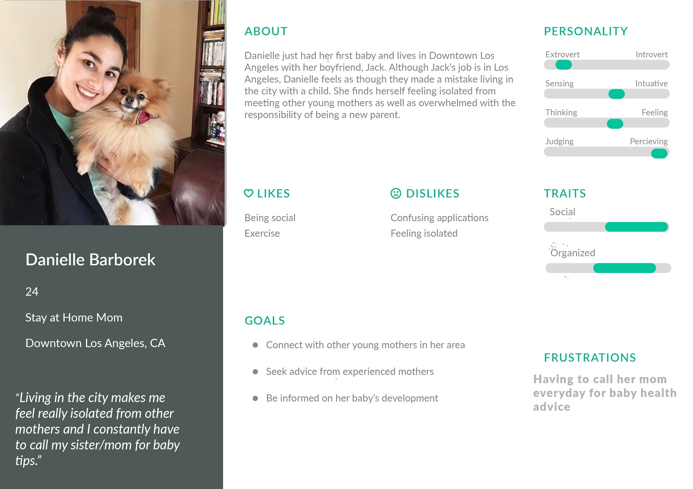
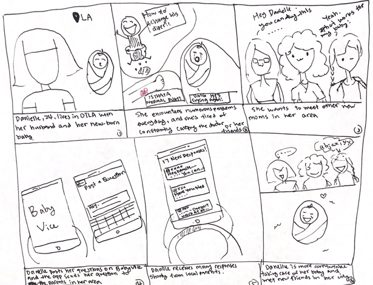
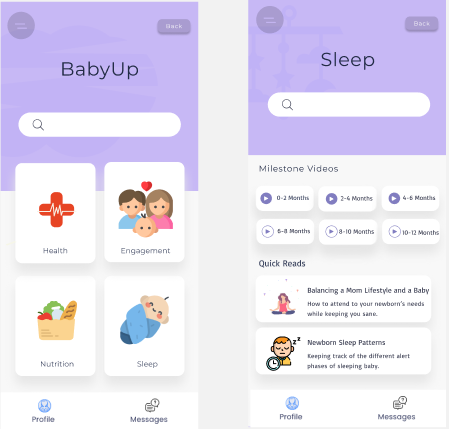
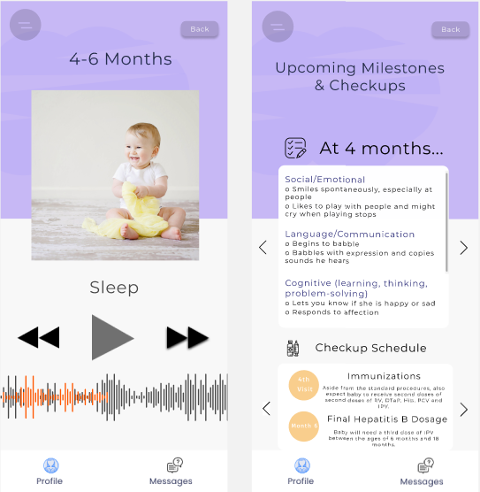

BabyVice
Project Overview
BabyVice is an app that helps new parents become outstanding parents. I worked in a team to design a platform where parents can gain insight into their baby’s maturation process, keep track of their baby’s changes and are alerted of upcoming milestones and checkups. Users can also share their progress by interacting with the community along with other new parents.
Problem Statement
New parents are often ill prepared for the difficulties of raising a child. Being a parent can be a challenge and keeping up on their baby’s developmental stages is a priority for most. New parents have access to overwhelming amounts of information from numerous sources, yet most of which can be conflicting and unreliable.
User Research and Needfinding
The demographic that we targeted for research were new parents in online discussion forums. A survey was created to assess the type of needs our stakeholders had to voice. We found that new parents are ill informed going through the maturation process of their baby. The following needs reflect the inputs received from users in baby parenting facebook groups:
- Track developmental stage with realistic milestones
- Suggested Activities/Resources to exceed baby’s developmental milestone
- Communicate with other new parents
The following persona illustrates the goals and desires of our target audience.
Storyboard
Living in a big city oftens makes her feel isolated and she’s tired of constantly calling her doctor and friends for baby advice. Danielle wants to have an app which can connect her to the other new parents in her area so they can exchange baby tips.
Paper Prototype of BabyVice

The first screen that users are met with upon profile creation. Having them indicate their baby’s age is crucial to customizing the type of information and developmental milestones the user sees.
After profile creation, users can visit the growth and development milestone tracker, which suggests information relevant to the baby’s current development.
This platform bridges the communication gap that new parents experience during the maturation of their baby. Users have access to discussions with other parents, along with expert advice, and informational content detailing the expected experience of baby raising during the specific developmental period.
User Testing
During our user testing stage, we showed our digital prototype to stakeholders that resonate with the user persona.The goal was to identify any major usability issues with our UI and specific needs that can be addressed prior to developing higher-fidelity prototypes. The following are key takeaways after testing the digital prototype:
- More distinct categories: The current categories we had (health, engagement, nutrition, sleep), were crucial to maintaining a baby’s growth but parents were looking for ways to further exceed developmental milestones and nurture their child in new ways.
- Easy Access to Community Discussions: Users found it simple to post a question about a community resource and expressed interest to further interact with other users through commenting.
- Way to track baby’s health/vitals: New parents also showed interest with a UI screen representing the baby’s vitals and daily schedule over time. This allows them to record the notable interactions they have with their baby.
High-Fidelity Prototype
 Reflection
In the end, my team was able to design a platform for new parents to track and gain insight into their baby’s maturation process. We also presented our project to our COGS 187A Usability and Information Architecture class. In hindsight, I was able to experience the work of a UI/UX designer while iterating through the design stages. I’ve begun to understand the challenges that designers are faced with in creating a novel experience while meeting the goals of users and other stakeholders.